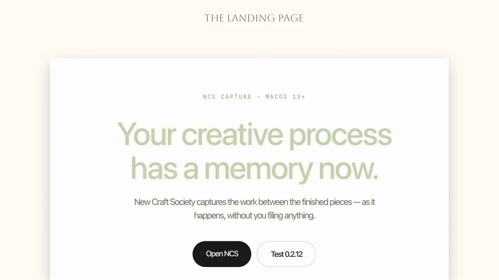

Product designer, making design fun & useful.
{{ ascii }}
I've always been a creative.
New Craft Society
The finished piece gets saved. Everything that led to it gets lost.
Capture is the easy half. The return trip is the product.
I designed something beautiful, then cut it for being in the way.
The card had grown into a form parked in the middle of someone’s work, waiting for input. The fix was to stop asking.
Organisation did not disappear — it moved to a moment when the person has attention to spare.
Uploading an iteration notifies nobody.
The landing page had to explain capture in terms they already understand.

30+ sessions, turned into a report someone could act on.
Research only mattered if it changed what we built.
Auto capture started as a P0. It was the most ambitious feature we had.
Success is understanding how the work actually gets used.
The half still being tested is the return trip — making a timeline you would actually scroll to the bottom of, and turning that scroll into the case study it promised to write for you. The honest version of this page is that the capture problem is solved and the memory problem is not, yet.
EcoBites
Request food in a few taps. No payment, no paperwork.


One shared order, two live views.

ORDER

Claim a route, verify the items, drive it to the door.


Four moves, from a messy problem to a calm flow.
Food insecurity is rarely a lack of food. It is a lack of access.
It started as a waitlist. It became a delivery network.
Dignity is a design requirement.
EcoBites reframed a heavy, bureaucratic experience as something gentle and immediate. The biggest lesson was not visual — it was that dignity is a design requirement. Every word, every wait state, every empty screen had to reassure rather than gatekeep.
If I took it further, I would pilot it with a single county’s pantry network and design the volunteer-side tooling that makes the model actually run.
Catalogue
Wishlists, screenshots, open tabs, “saved” folders that never get reopened. The way we collect things to buy is messy, context-less and joyless — the opposite of how it feels to flip through a beautiful magazine.
Catalogue treats every saved product as a clipping you can compose with. Save from anywhere, then arrange your finds into editorial spreads — typography, layout and white space included.
A canvas that behaves like a page.


From clipping to composition.


Saving should feel like curating, not hoarding.


One card and one grid carried the whole thing.
Catalogue taught me how much a single, well-built component can carry. Most of the design effort went into one card and one grid — and once those were right, the editorial feeling came almost for free.
The open question I would tackle next: how do you keep a feed of other people’s issues inspiring without turning it into another endless scroll?
TruePay
When a bank stops a payment you learn two things: that it was stopped, and that you should call someone. You never learn what tripped it. The suspicion is real, the reasoning is sealed, and the cost lands on you — a dead card at a counter, twenty minutes on hold, a dispute form that asks you to prove a negative.
TruePay started as a concept with the right ingredients: a security score, live alerts, biometric approval, a model watching every transaction. But it spent them on reassurance — badges telling you that you were safe. That is the same black box in nicer packaging.
So I rebuilt it as a working front-end shell, because the interesting questions here are not answerable in static frames. How much security presence is too much? Does anyone actually read five risk factors, or do they just want the verdict? Does making the model legible calm someone down, or hand them a new thing to worry about?
Security you never see is invisible. Security you always see is a checkpoint.


Default is what the build ships with — enough that the model is visibly working, quiet enough that it is not asking for credit. Foregrounded earns its place right after a hold, when narration is genuinely wanted, and nowhere else.
Most payments are fine. The design has to believe that.


People need to know how bad it is before they need to know why.
Held is not blocked. The model narrows the choice; it never takes it.

I only caught it because the prototype was real enough to scroll. That is the argument for building the thing.
A number you cannot move is decoration.
So a weakened score does not merely shrink. It visibly frays. The number and the feeling move together.
Dark fintech has a house style. I went to banknotes instead.
Every colour and corner in the build is one token away from changing.
Security as a relationship, not a gauntlet.
The insight that stuck: people will accept almost any safeguard if you tell them why it is there, and resent the smallest one if you do not. Every decision in this build follows from that — the radar, the ambient field, the score you can move, the decision that never leaves the screen.
Rebuilding it as a working shell rather than a prototype deck was the right call for a second reason I did not expect: the sticky-footer problem in (005) is invisible in static frames. You only find it by scrolling a real screen at a real size.